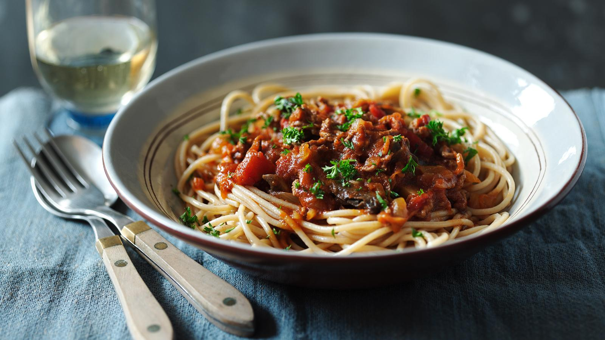

Healthy Spaghetti Bolognese

Description
Use lean mince (about 4% fat or less) and whole wheat pasta to enjoy a
healthy bolognese that you can feel 100% good about.
Ingredients
- 1 tbsp olive oil
- 200g/7oz lean beef mince
- 1 onion, finely chopped
- 4 large mushrooms, sliced
- 1 carrot, grated
- 1 400g/14oz tin tomatoes, chopped
- 230ml/8fl oz vegetable stock
- 2 tbsp tomato purée
- ½ tsp Worcestershire sauce
- ½ tsp freshly ground black pepper
- 300g/10½oz whole wheat spaghetti
- 2 tbsp chopped fresh parsley
Steps
- Heat the olive oil in a large saucepan over a medium heat.
Add the mince and the onion and fry for five minutes,
stirring occasionally, until the mince is browned and the
onions softened.
- Add mushrooms and carrot, cook for around one minute, then
add tinned tomatoes, vegetable stock, tomato purée, Worcestershire
sauce and freshly ground black pepper. Stir well and bring to the
boil, then reduce the heat to simmer for 15-20 minutes, until the sauce has thickened.
- Place the wholemeal spaghetti in a deep saucepan full of salted boiling water and cook
according to packet instructions, then drain.
- To serve, divide the cooked spaghetti between four dishes, spoon equal portions of Bolognese
sauce over each and sprinkle with parsley.
Back to Homepage